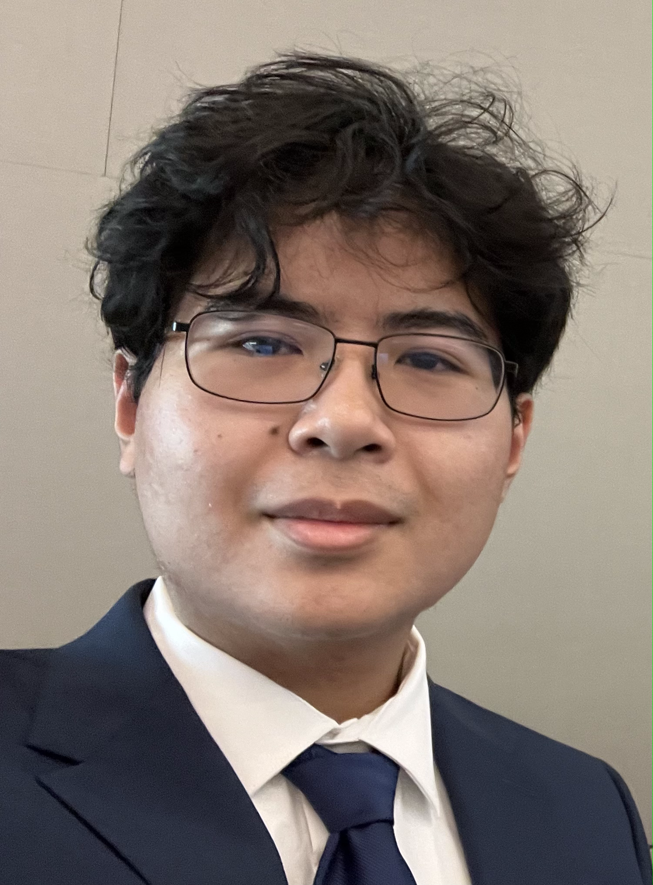

Ever since I first built LEGO Mindstorms robots at Lakeland Elementary, I’ve been obsessed with bringing ideas to life through motion.
In high school, I revived my school’s dead FTC robotics team and led it for two years, designing systems that taught me how control, code, and creativity intersect.
That same excitement still drives me today — whether I’m wiring an EMG-controlled prosthetic arm, debugging a drone’s flight controller, or designing a rover’s power system from scratch.
Robotics isn’t just something I study - it’s what I live for.
Education
University of Texas at Dallas
B.S. in Computer Engineering • Expected May 2027
GPA: 3.2 • UTD Top 10% Scholarship
Key Coursework: Embedded Systems, Operating Systems, Feedback Systems, Signals and Systems, Computer Architecture, Digital Logic, Data Structures & Algorithms, Electronic Circuits, Fundamentals I & II. Notable Experience: Electrical Lead – AIAA Comet Aerobotics (Lunabotics Challenge)
Research: Humanoid Biorobotics Smartsystems (HBS) Lab, Integrated Biomedical Radio Frequency (iBioRF) Lab

Projects
EMG-Controlled Prosthetic Arm
Designed and built a custom EMG-controlled prosthetic arm as an independent exploration of biomedical control systems.
Mapped optimal electrode placements on the flexor, extensor, and brachioradialis muscles to isolate activation patterns for intuitive motor control.
Integrated an ESP32, servo driver, and actuator assembly to translate muscle activity into precise joint movements.
A 3D-printed arm housing is prepared for final assembly, completing a full stack from signal acquisition to mechanical actuation for a low-cost, functional prosthetic platform.
Skills:
EMG signal acquisition • Embedded programming (ESP32 & C++) • PCA9685 servo control • Analog filtering & threshold logic •
Power regulation & dual buck converters • 3D-printed mechanical integration • Rapid prototyping & system debugging
One EMG signal from Flexor Carpi Radialis MuscleOne EMG signal from Extensor Carpi Radialis muscleOne EMG from Brachioradialis muscle
Red Line from three EMG sensors indicate the Flexor Carpi signalBlue Line from three EMG sensors indicate the Extensor Carpi signalGreen Line from three EMG sensors indicate the Brachioradialis signal
ESP32 Feather V2 controller with Motor Driver and One Servo (Plan on using 5 stronger servos)Robotic Arm InspirationModel for Robotic Arm
Probabilistic UAV Trajectory Prediction
Developed a probabilistic UAV tracking framework using diffusion models to predict dynamic drone trajectories in noisy environments.
Implemented Extended Kalman Filtering (EKF) for sensor fusion and state estimation to reduce error in real-time trajectory prediction.
Integrated ROS2 nodes for simulation and real-world UAV control, coordinating between position tracking and path correction algorithms.
Designed performance visualizations to analyze prediction accuracy and convergence over multiple test runs.
Programs
Tracker: UAV tracking a moving ground object (like a race car)
Follow: Rocket pursuit using PD guidance
Intercept: Defensive rocket intercept using Proportional Navigation (PN)
Skills:
Diffusion-based modeling • Kalman filtering (EKF) • UAV state estimation • ROS2 integration • Real-time control systems •
Python/C++ development • Simulation and performance analysis
3D (angle A): UAV (green) flying a quarter-circle arc while tracking a ground target (blue). Diffusion-EKF estimate (orange) stays aligned.3D (angle B): Alternate angle highlighting stability through the turn.2D Metrics: Position/velocity errors and NEES show bounded estimation.
3D (angle A): Pursuer (green) following target (blue) with smooth PD turns via diffusion-stabilized EKF (orange).3D (angle B): Alternate perspective showing steady convergence.2D Metrics: Range decreases, closing speed stabilizes, accel bounded.
3D (angle A): Launch-on-close intercept — our rocket (green) leads target (blue); orange EKF matches true path.3D (angle B): Rotated view showing intercept point where green meets blue.2D Metrics: Range-to-go drops sharply; closing speed flips near impact.t
ROS2 Multi-Drone Coordination
Developed a multi-agent UAV coordination framework in ROS2 using DDS-based communication for real-time waypoint sharing and formation control.
Implemented collision avoidance logic with adaptive velocity commands and distributed consensus algorithms for robust multi-drone synchronization.
Created custom nodes for sensor fusion, path planning, and dynamic target tracking, enabling autonomous behavior across multiple simulated drones.
Simulated full swarm deployment with Gazebo and RViz to evaluate latency, control stability, and fault recovery under communication loss scenarios.
Skills:
ROS2 • DDS networking • Gazebo • RViz • Python/C++ nodes • Multi-agent systems • Collision avoidance algorithms •
Real-time communication • Path planning • Distributed control theory • Linux
Multi-Drone Simulation with simple bias and noiseMulti-Drone Simulation with Physical Wind simulation
Wind-Resistant Face-Follow Drone (Tello EDU)
Developed a real-time face tracking control algorithm for the DJI Tello EDU drone using Python and OpenCV for visual detection and servo coordination.
Implemented proportional–integral (PI) control to maintain position and altitude stability during simulated wind disturbances in an indoor environment.
Integrated Tello SDK commands for dynamic flight correction, enabling adaptive drone behavior based on camera input and environmental feedback.
Tested multiple control gains and camera frame rates to optimize latency and ensure smooth, reliable face tracking performance.
Skills:
Python • OpenCV • DJI Tello SDK • Control systems (PI tuning) • Real-time image processing • Computer vision tracking •
Flight dynamics simulation • System testing and optimization
TELLO EDU using Python Program to track face and adjust based on position
Homemade DC Motor (DIY)
Designed and built a functioning DC motor entirely from scratch using copper wire, magnets, and a hand-crafted wooden frame.
Wound 150 turns of enamel-coated copper wire around a custom tool to form the armature coil and balanced the rotor for smooth operation.
Assembled opposing neodymium magnets for a stable magnetic field and powered the motor with 18 V DC to achieve continuous rotation.
Documented testing and adjustments in coil symmetry, magnet alignment, and current input to refine rotational speed and torque output.
Skills:
Electromechanical fabrication • Magnetic field alignment • Coil winding (150 turns) • Mechanical design using wood tooling • Power and current optimization • Soldering • Circuit and balance calibration
Top view — coil alignment between magnet poles.Side view — handmade wood base with copper coil.Spin test — stable rotation at 18 V.
Redesigning the rover’s electrical architecture to optimize power distribution, system safety, and communication reliability.
Integrated ESP32 microcontrollers with CAN transceivers to create a modular control network supporting autonomous navigation.
Designing custom PCBs in Altium for power regulation and relay switching, reducing wiring complexity and improving fault tolerance.
Collaborated with mechanical and software teams to ensure full subsystem compatibility during the ongoing system power redesign phase.
Skills:
Altium schematic/PCB • ESP32 + CAN integration • Power regulation (bucks/relays) • Harness design • Fault isolation • Test planning • Cross-team integration
Pre-Season early designEarly Model of the Electrical BoxModel 2 of the early Electrical Box with Rover
Current Electrical Box DesignEarly Schematic of the Electrical BoxESP32 and CAN transceiver PCB created to reduce amount of wires and increase connection strength
Humanoid Biorobotics and Smart Systems Lab (HBS Lab)
Role: Research Assistant
Contact: Dr. Yonas Tadesse [Yonas.Tadesse@utdallas.edu] [972-883-4556]
Fabricated Twisted & Coiled Polymer (TCP) actuators and developed MATLAB-based tracking tools to measure deformation and performance.
Tested actuator behavior under varying loads and pressures, characterizing efficiency, temperature response, and durability.
Applied results to two demonstrations: soft robotic manipulator and expressive robotic face prototype.
Spinning the cable while holding it to create coils.Training the TCP with 9VTCP healing and cooling test under different pressures
Facial Expressions using TCP under silicone skin maskRobotic Arm developed with TCP musclesSoft Robotic Limb using TCP and silicone
Accessible Prosthetics Initiative
Role: Electrical/Embedded Systems Member
Contact: Michael Dahl [Michael.Dahl@utdallas.edu] [717-704-9291]
Developed a 3D-printed, low-cost prosthetic arm powered by an ESP32 microcontroller and controlled using EMG signals.
Designed custom actuator mounts and integrated dual buck converters for stable servo operation.
Led the integration of uMyo EMG sensors for accurate and responsive user interface, enabling intuitive control of the prosthetic hand movements.
Skills:
EMG signal acquisition & filtering • Embedded C/C++ (ESP32) • Servo control via I2C (PCA9685) • Power delivery optimization • 3D mechanical integration • PCB prototyping • Electrode calibration • Bio-signal interface design • Prototyping & debugging
Front of Proshetic ArmBack of Prosthetic ArmSide of Prosthetic Arm with ESP32 stack and connectors
Demonstrating the Prosthetic Arm running with ESP32 and ArduinoIDE
Integrated Biomedical, RF Circuits and Systems Lab (iBioRF)
Role: Research Assistant
Contact: Erik Pineda-Alvarez [Erik.Pineda-Alvarez@utdallas.edu]
Developing a wireless UAV control system using Ettus USRP B206mini-i to transmit custom RF signals for large drone operation.
Implementing SDR-based waveform generation and link analysis through RadioConda and GNU Radio environments.
Integrating RF control with onboard autopilot to support closed-loop command, telemetry, and tracking.
Skills:
Software-defined radio (SDR) • USRP B206mini-i configuration • RF link design & analysis • GNU Radio & RadioConda environment development
• Signal modulation (QAM, BPSK) • Wireless telemetry integration • Control systems design • UAV communication systems
Collaborated with a community partner to design and deploy a literacy support platform for mentorship and event coordination.
Developed backend services using Node.js, PostgreSQL, and Prisma; implemented responsive frontend with Vue and Tailwind.
Containerized project with Docker for stable deployment and team collaboration.
Skills:
Full-stack web development • Node.js & Express backend • REST API architecture • PostgreSQL/Prisma ORM
• Vue 3 + Tailwind UI design • TypeScript • Docker containerization • Agile collaboration & Git version control
Project GANTT ChartFinal Presentation with ProfessorFinal Presentation with Friends of MLK sponsor, Rae
IEEE Project
Role: Machine Learning Team Member
Trained a convolutional neural network for dog breed classification using TensorFlow and custom-labeled datasets.
Performed model validation using confusion matrices to analyze accuracy and misclassification trends.
Presented final results with visual metrics to evaluate model performance.
Skills:
Python programming • TensorFlow/Keras deep learning • CNN model design & optimization • Data preprocessing & augmentation • Model validation (confusion matrix, accuracy metrics) • GPU training workflow • Scientific presentation
Confusion matrix showing per-class accuracy for the CNN-based dog breed classifier.
High diagonal concentration indicates strong model precision across most categories.
RIDE Lab — Orthotic Design
Role: Team Lead
Conducting foundational research for a next-generation prosthetic arm aimed at improving accessibility and control for users with partial limb loss.
Focused on benchmarking existing prosthetic technologies, analyzing actuator and joint mechanisms, and preparing design proposals for future prototyping phases.
Collaborated in team presentations translating technical findings into actionable design plans for future implementation.